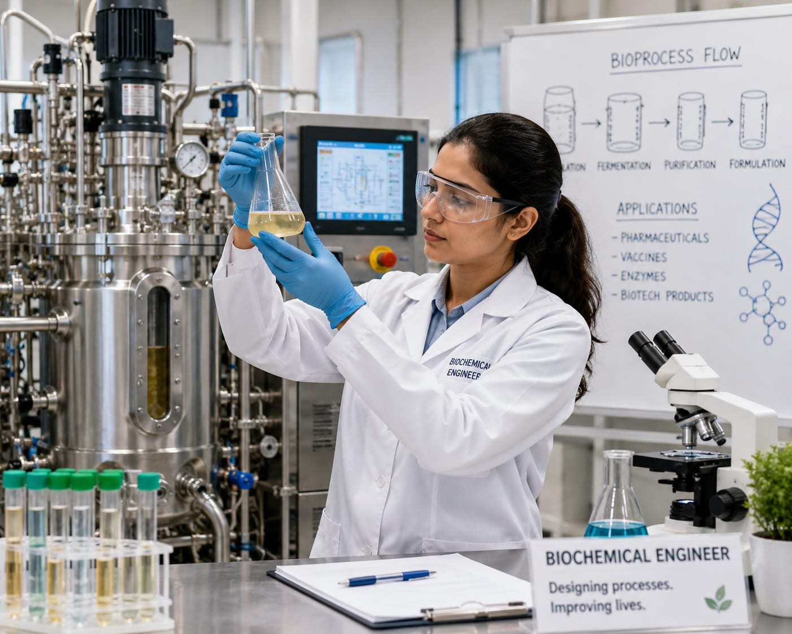

- Imagine scientist discovered a new medicine that could help many people.
- They can make only a small quantity in the laboratory.
- To make a large amount of this medicine, they need a proper production system.(equipments & process)
- The person who designs this system is called a Biochemical Engineer.
- 👉 In simple words: Biochemical Engineers design systems that produce biological products on a large scale.
Biochemical Engineer
What Do They Do?

🎓 How to Become a Biochemical Engineer
These diploma courses help students learn biotechnology, biochemical processes, laboratory techniques, and industrial production systems.
Diploma in Biotechnology
Duration: 3 Years
Eligibility: 10th Pass with Science and Mathematics (Minimum 35%–50% marks)
Exam: State Polytechnic Entrance Exams
Note: Students who complete this diploma can work in laboratories, biotechnology industries, food processing units, and pharmaceutical manufacturing or continue higher studies in Biochemical Engineering and Biotechnology.
These degree programs help students learn biochemical processes, biotechnology, industrial microbiology, pharmaceuticals, and large-scale biological production systems.
B.Tech / B.E. in Biochemical Engineering
Duration: 4 Years
Eligibility: 10+2 with Physics, Chemistry, and Mathematics/Biology (PCM/PCB) (Minimum 50%–60% aggregate)
Exam: JEE Main / JEE Advanced / State-Level Engineering Entrance Exams
B.Tech in Biotechnology and Biochemical Engineering
Duration: 4 Years
Eligibility: 10+2 with Physics, Chemistry, and Mathematics/Biology (PCM/PCB) (Minimum 50%–60% aggregate)
Exam: JEE Main / JEE Advanced / State-Level Engineering Entrance Exams / University Entrance Exams
📝 Exam Details
(Click on the exam name to see full details)
JEE Main JEE Advanced State-Level Engineering Entrance Exams University Entrance ExamsNote: These programs prepare students for careers in biotechnology, pharmaceuticals, food processing, biochemical manufacturing, fermentation technology, biofuels, and industrial research.
These lateral-entry programs allow diploma holders to enter directly into the second year of a bachelor's degree and specialize in biochemical engineering, biotechnology, and industrial bioprocessing.
B.Tech Lateral Entry in Biochemical Engineering
Duration: 3 Years (Direct admission into 2nd year)
Eligibility: 3-Year Engineering Diploma in Biochemical, Chemical, or Biotechnology streams (Minimum 45%–50% marks)
Exam: State Lateral Entry Entrance Tests (e.g., JELET, OJEE LE, TS ECET)
Note: Lateral-entry students can directly join the second year of B.Tech programs and continue their specialization in biochemical engineering, biotechnology, pharmaceutical manufacturing, and industrial bioprocessing.
These postgraduate programs help students specialize in biochemical engineering, biotechnology, bioprocess technology, industrial microbiology, and advanced biochemical manufacturing.
M.Tech / M.E. in Biochemical Engineering
Duration: 2 Years
Eligibility: B.E. / B.Tech in Biochemical Engineering, Chemical Engineering, or Biotechnology (Minimum 50%–60% aggregate)
Exam: GATE / CUET PG
Note: Postgraduate studies help students pursue careers in pharmaceutical manufacturing, biotechnology industries, biochemical process design, industrial R&D, biofuels, and advanced research.
Note:
(Age limits, marks, and admission process may vary depending on the college or state.
Below are some colleges that offer these courses.
These courses are available in many colleges and universities across India. You can choose colleges based on your location, budget, and entrance exams.)
🏛️ Colleges offering these courses in India
(Tap on a college to view the details)
After Class 12
Indian Institute of Technology (IIT) Delhi, New Delhi Galgotias University, Noida, UP Sree Chitra Thirunal College of Engineering, Trivandrum, Kerala Manipal Institute of Technology, Manipal, KarnatakaAfter Diploma (Lateral Entry)
Harcourt Butler Technical University, Kanpur, UP Chandigarh University, PunjabSTEP 1
Imagine you are working as a Biochemical Engineer in a company that makes products such as medicines, vaccines, enzymes, or food ingredients.
STEP 2
Your job is to use living cells, microorganisms, or biological materials to help produce these products.
STEP 3
You design and improve the processes used to grow microorganisms or cells and produce the required product.
STEP 4
You make sure the production process is safe, efficient, and follows the required quality standards.
STEP 5
You work with equipment such as bioreactors and help increase production from a small laboratory process to a large-scale factory process.
STEP 6
You monitor the process and solve problems if the cells, microorganisms, equipment, or final product are not working as expected.
STEP 7
If you enjoy biology, chemistry, technology, and solving problems to create useful products, this career may suit you.
Where do Biochemical Engineers work? (Job Roles + Growth)
Biochemical Engineers work in : Biotechnology companies, Pharmaceutical companies, Food and beverage companies, Chemical companies, Biofuel companies, Research laboratories, and Bioprocessing plants.
🟢 Beginner Roles
Junior Process Assistant
(After Diploma)
Helps operate equipment and perform lab tests.
Graduate Engineer Trainee (GET)
(After B.Tech)
Assists engineers in testing and production projects.
🔵 Mid-Level Roles
Biochemical Engineer
(After B.Tech + Experience)
Designs systems to produce medicines, fuels, and chemicals.
Bioprocess Development Engineer
(After B.Tech Specialization + Experience)
Improves production processes using living cells and microbes.
🟣 Advanced Roles
Bioprocess R&D Manager
(After M.Tech / Advanced Specialization)
Leads research and production improvement projects.
VP of Bioprocess Engineering
(After Executive Program + Experience)
Leads large engineering teams and production operations.
Pharmaceutical Companies
Develop and manufacture medicines, vaccines, and healthcare products.
Biotechnology Companies
Create products using living cells, microbes, and biological processes.
Food & Beverage Industries
Improve food production, quality, and safety processes.
Chemical Manufacturing Companies
Produce chemicals, enzymes, and industrial materials.
Research & Development Centers
Develop new medicines, biofuels, and manufacturing technologies.
Global Bioprocess Industries
Work on large-scale production projects around the world.
(Click Yes or No for each question)
1. Do you use medicines such as tablets, syrups, or vaccines when you are sick?
2. Have you ever wondered how medicines and vaccines are made in large quantities for millions of people?
3. Are you interested to know how scientists produce medicines, vaccines, and other health products?
4. Imagine you are working as a Biochemical Engineer for a company that makes medicines. The company uses microorganisms to produce a medicine. Your job is to grow these microorganisms in large tanks under the right conditions, such as the right temperature, nutrients, and pH. You make sure the process works properly so the medicine can be produced safely and in large quantities. Are you interested in doing this kind of work?
5. A food company wants to produce yogurt in large quantities. First, milk has to be converted into yogurt using microorganisms. Your job is to manage this process and make sure the yogurt is produced properly and in large quantities. Finally, the company can produce good-quality yogurt for its customers. Would you enjoy doing this kind of work?